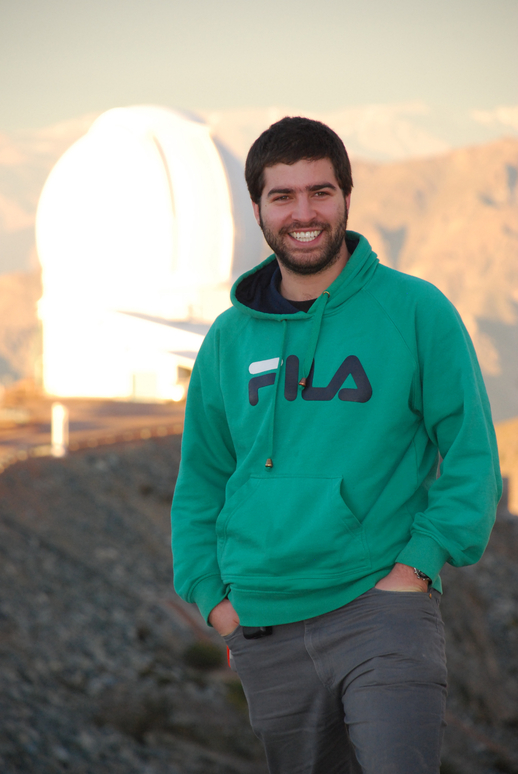
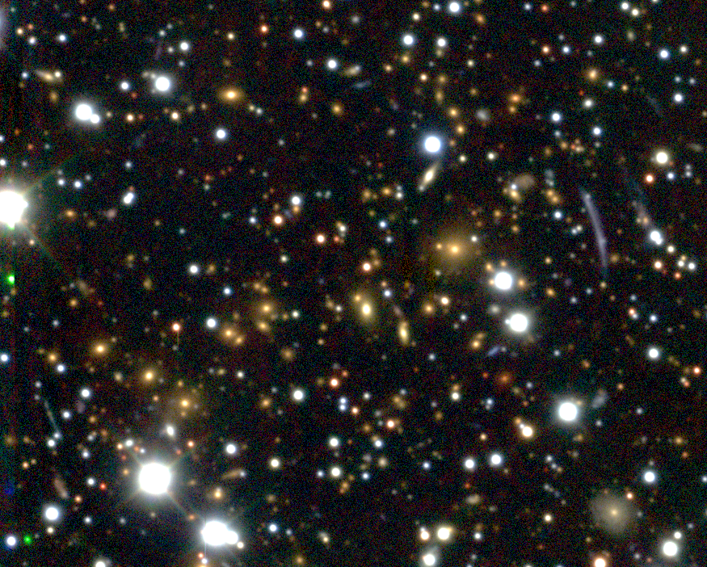
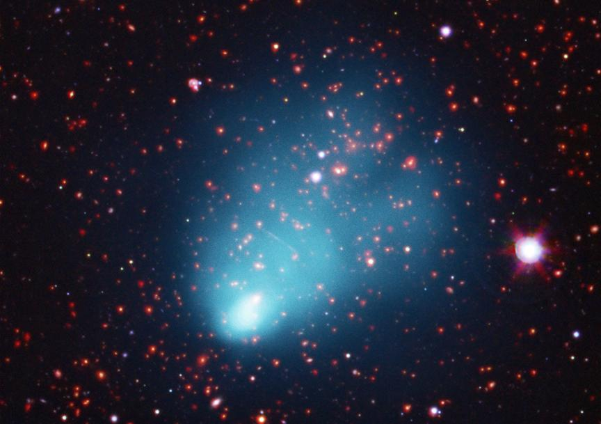

| Home | Research | Python Corner | Useful Links |
|
Cristóbal Sifón Andalaft sifon@astro.princeton.edu Postdoctoral Research Associate Department of Astrophysical Sciences Princeton University Peyton Hall, 4 Ivy Ln, Princeton, NJ 08544 Phone: +1 609 258 2303 Curriculum Vitae ADS List of Publications |
 |
|

 |
Since October 2016, I am a Postdoctoral Research Associate in Princeton University. I obtained my PhD from Leiden University on 7 September 2016, under the supervision of Dr. Henk Hoekstra. Before that, I obtained both my MSc (2012) and BSc (2010) from Universidad Católica in Chile. I am interested on a variety of aspects of galaxy clusters and their cosmological interpretation. Topics I am particularly interested in include: On the left are two galaxy clusters that I've become interested in: My PhD thesis, where I explored most of the subjects listed above, can be downloaded here. |